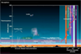

ionosphere

Definition: The ionosphere () is the ionized part of the upper atmosphere of Earth, from about 48 km (30 mi) to 965 km (600 mi) above sea level, a region that includes the thermosphere and parts of the mesosphere and exosphere. The ionosphere is ionized by solar radiation. It plays an important role in atmospheric electricity and forms the inner edge of the magnetosphere. It has practical importance because, among other functions, it influences radio propagation to distant places on Earth. It also affects GPS signals that travel through this layer.
Source: Wikipedia
Wikipedia Page (Something wrong with this association? Let us know.)
Wikidata Page (Something wrong with this association? Let us know.)